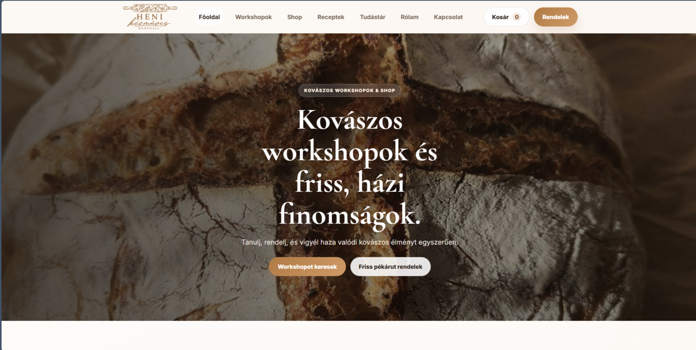
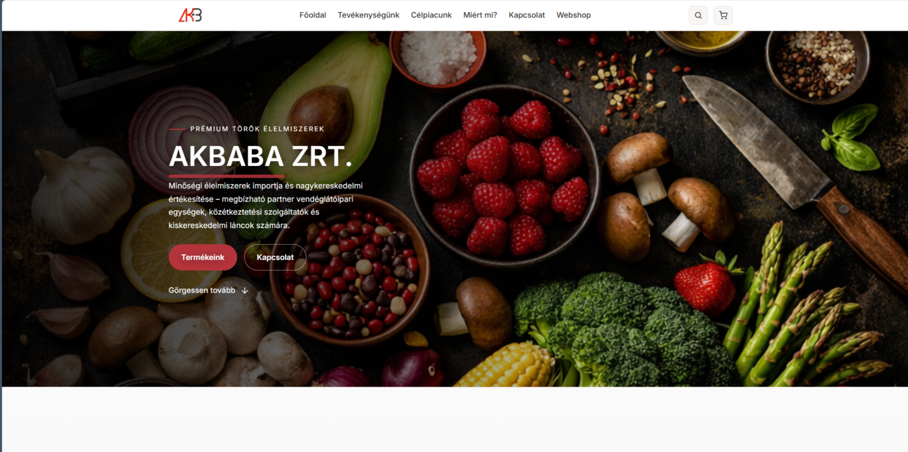
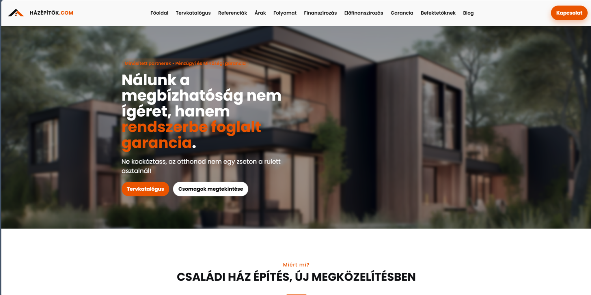

MyFirstOffice Core
Kapcsolatok, feladatok, naptár, projektek, dokumentáció és működési adminisztráció egy közös adatlogikán.
A MyFirstOffice a My First Web új iránya: publikus webes jelenlét, belső office működés és modulárisan bővíthető rendszerlogika egy közös alapra szervezve.
Kapcsolatok, feladatok, naptár, projektek és operatív működés egy átlátható felületen.
Ugyanarra a motorra épülhet kivitelezői, szolgáltatói vagy egyéb preset logika.
A közös mag, a moduláris bővítés és a preset szemlélet adja azt az alapot, amiből később skálázható termék lesz, nem egyszeri weboldal.
Kapcsolatok, feladatok, naptár, projektek, dokumentáció és működési adminisztráció egy közös adatlogikán.
A közös magra ráépíthetők üzleti funkciók, például ajánlatkérő, kivitelezői folyamatok vagy dokumentációs blokkok.
Nem üres adminfelületet kapsz, hanem induló logikát, amiből célzott rendszerélmény építhető.
Landing, ajánlatkérő, kapcsolati logika és egyszerű operáció.

Események, jelentkezések és kommunikáció közös rendszeren.

Termékek, rendelések és könnyített operatív adminisztráció.

Projekt, dokumentáció, munkafolyamat és kivitelezési kommunikáció.
Ez a publikus csomag a webes réteget mutatja meg. A teljes office és projektmotor külön szerveres futtatást igényel.
A felhasználók, jogosultságok, projektek és alap adminisztráció ugyanarra a terméklogikára épülnek.
Az üzleti funkciók modulonként kapcsolhatók rá a közös alapra.
Az ügyfél nem nulláról indul, hanem egy előre összerakott működési modellből.
A teljes belső app külön futtatást igényel, de ugyanennek a rendszernek a része.